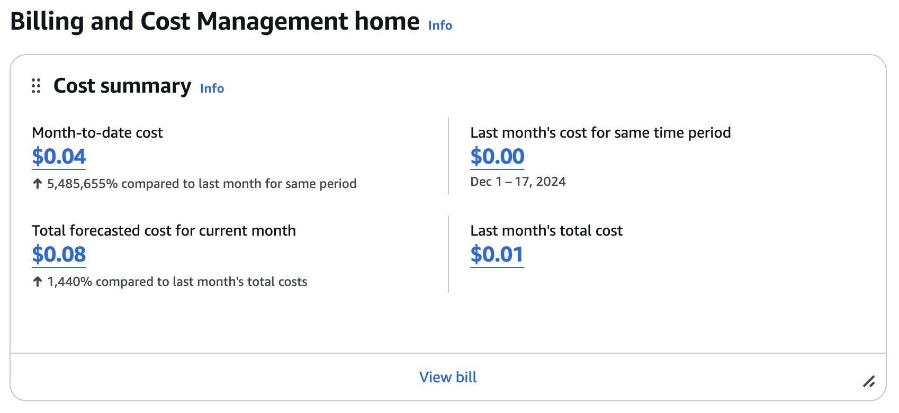

Optimizing Real-Time Transit Data Collection: A Journey To Serverless Architecture
Introduction
Every student at UBC faces a common dilemma: when is the optimal time to leave for catching public transit? This seemingly simple question sparked my personal project into if we can predict transit arrival times. In this blog post, I want to detail my data engineering journey that evolved from a local development environment to a cost-effective serverless architecture. This post will describe the technical challenges, architectural decisions, and optimization strategies encountered while building a system to collect real-time transit data from Vancouver’s Translink Bus Company.
The Initial Approach: Local Development Challenges
The project began with a straightforward implementation using Jupyter Notebooks to collect real-time bus data. The data collection process involved making API calls every 5 minutes, each returning 15,000-20,000 rows of transit data. The entire process is orchestrated by Apache Airflow, an event scheduler. While this approach worked initially, I quickly ran into an issue that was quite ironic:
My laptop cannot be on 24/7: The requirement for a continuously running laptop created reliability issues, particularly for collecting data during actual commute times - the data I need the most. For example, when I’m on the bus, I cannot collect any data. I could connect my laptop to my mobile hotspot, but that has its own reliability issues too.
If you worked on any data science or software engineer project, you know the pain of “it works on my computer”, and the actual challenge of implementing it in production. So, there is a long journey ahead.
Exploring Cloud Infrastructure Options
To run the data collection process 24/7, I needed to migrate my process to the cloud. Since Amazon Web Services (AWS) was offering free trials, I decided to sign up for one.
Traditional VM Approach
AWS offers a free tier t2.micro instance of computing, which has 750 hours of usage per month. But there is no free lunch, and the t2.micro has its own set of challenges:
- Memory Limitations: The 1GB RAM allocation proved insufficient for running both Jupyter Notebook and Airflow scheduler. My original process of Apache Airflow to schedule notebook execution introduced significant computational overhead, as it required running the entire Jupyter environment for each data collection cycle.
- Database Considerations: The local SQLite implementation would need migration to a cloud database like AWS RDS, introducing additional complexity and cost.
- Cost Analysis: A preliminary calculation showed that upgrading to t2.large instances with 16GB RAM and maintaining a separate database instance would result in monthly costs approaching US$120.
Hardware Alternative Consideration
A Mac Mini (US$499) was evaluated as a potential solution, but it wasn’t optimal: - Limited storage options (256GB disc space) requiring costly upgrades - Maintenance and reliability concerns for a dedicated machine. Sometimes, I would have to SSH into the Mac Mini to check progress, but it’s a big security concern to expose the ports to all of the internet.
Resource Utilization Analysis
I need an even cheaper option. I examined my workflow, and discovered that:
- Each data collection cycle consumed approximately 10 seconds
- Daily operation required roughly 500 cycles
- Total daily computation time: 5000 seconds (83 minutes)
- Traditional VM approach would result in 95% idle time
You can see the usage pattern of the data fetcher in the image below after migrating to the cloud.
I need something that can run workflow on the VM for 10 seconds every 5 min, then shut off the process, saving cost. Fortunately, AWS has something just for that.
The Serverless Option: Implementing AWS Lambda
AWS lambda is a serverless compute service that lets you run code without provisioning or managing servers. It works by running your code in a container, and then shutting off the container after the code is done running. It’s a pay-per-use model, and it’s perfect for my use case.
Architectural Benefits
The shift to AWS Lambda addressed several key challenges:
- Cost Optimization: Pay-per-use billing model aligns perfectly with the intermittent nature of data collection
- Storage Efficiency: Replacing traditional database writes with S3 blob storage reduced operational complexity and costs
- Containerization: Packaging my entire workflow into Docker containers simplified deployment and configuration management
Technical Implementation
I utilized several AWS tools to build my own system:
- Event Triggers: AWS EventBridge manages 5-minute interval executions
- API key management: AWS Secrets Manager to manage API keys
- Containerization: Docker containers package Python scripts, replacing Jupyter notebooks. Containers are stored in AWS ECR (Elastic Container Registry).
- Storage: Amazon S3 provides durable, cost-effective storage for CSV/Parquet data
- Resource Optimization: Reduced RAM usage through optimized Python scripts. Each job only needs 512MB of RAM.
One question you might have is that why I stopped using a database all together. Let me explain. S3 is what’s called a data lake. Traditional databases enforce “schema-on-write” – meaning data must conform to a predefined structure before storage. Here, I’m adopting a “schema-on-read” approach with data lakes, where data can be stored in its raw form and structure is only imposed when the data is retrieved. Since I have to do additional data cleaning and ETL anyway, this approach is more cost effective.
Results and Performance Metrics
After two weeks of operation, the serverless architecture demonstrated impressive results:
- Data Volume: Successfully collecting 3.9 million rows of data daily, approaching around 50 million rows currently
- Cost Efficiency: Monthly expenses reduced to US$1-2 for the entire system
- Reliability: No system failures or data loss reported
- Maintainability: Independent event execution prevents cascading failures. Previously, if some jobs were stuck in Airflow, it would prevent further jobs from running. With Lambda, each job is its own container, and job failures do not affect other jobs.
- Durability: S3 storage ensures data persistence without additional management overhead
When I need the data, I could just run a simple cli command to copy all the data onto my local computer.
Below are the screenshots of my AWS billing dashboard for this project and cost breakdown. As you can see, the current solution is very cost effective.


What’s the next step?
Since figuring out AWS Lambda, I added another similar workflow to collect hourly weather forecast. I hypothesize that on colder or rainy days, there would be more delay for the bus network. This could be that more people are incentivized to take public transportation rather than walking or biking, or could prompt more people to drive. Most transit app tells me when might the next bus arrivals, but never gives me any historical data. I think I could create an app that fills in this demand.
I’ve began working on the modeling process. Uber has a great blog about it that I’m currently exploring. Instead of predicting everything, the model tries to predict the difference (residual) between what the routing engine is suggesting versus what the actual ETA is. I believe that the same idea could be applied on the bus network. I’ve had several encounters where I know buses are usually delayed on certain routes during certain times, why can’t a machine learn these patterns?
Below is the full system design that I’m looking to implement.
If you are interested in this project in modeling or data engineering, please contact me on Slack @Jiayi Li
Note: The XGBoost logo isn’t rendering correctly, but it’s there above PyTorch deep learning models.